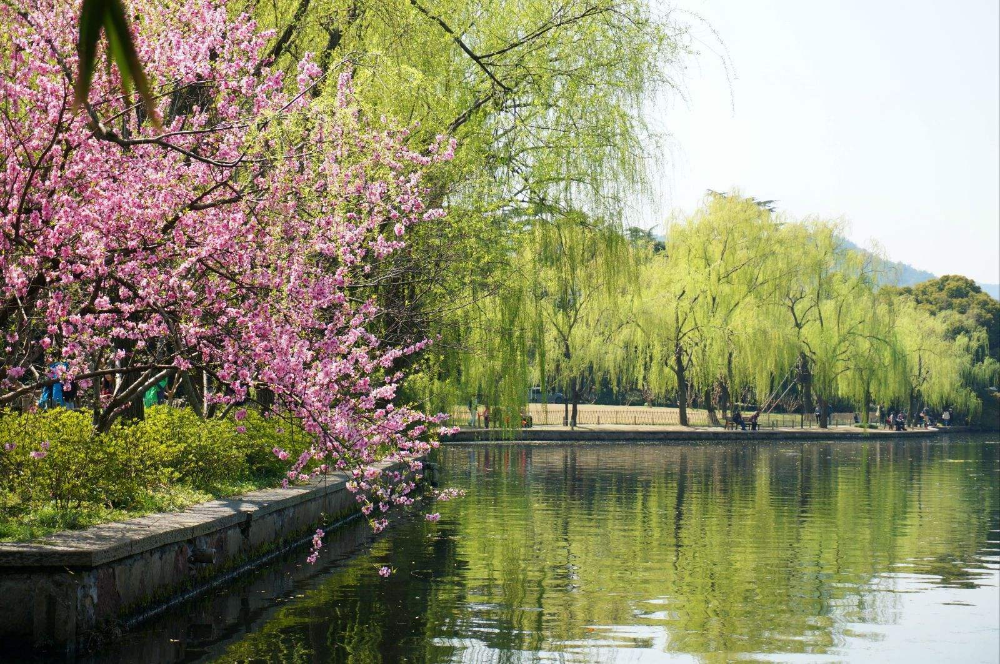
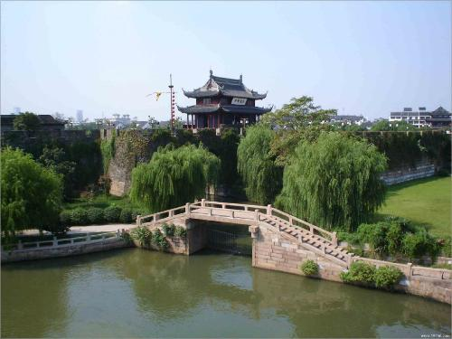
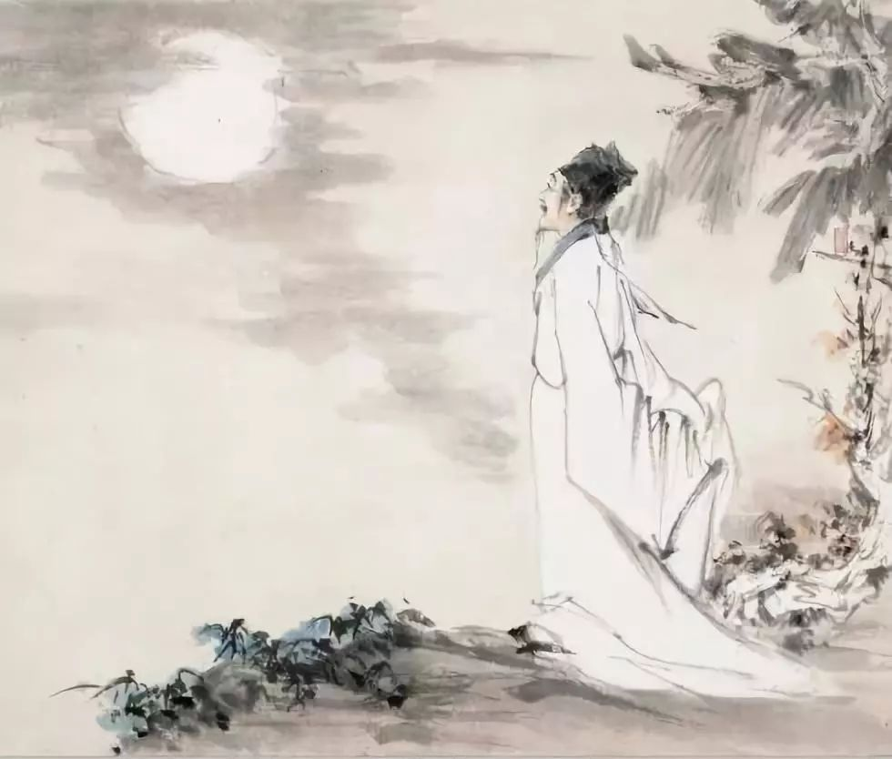
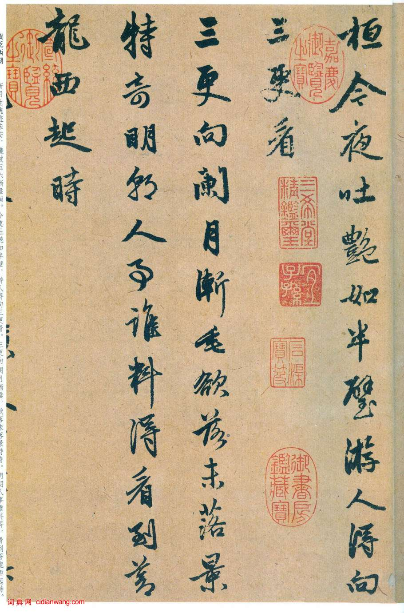

苏堤春晓，西湖十景之一。南宋时，苏堤春晓被列为西湖十景之首，元代又称之为“六桥烟柳”而列入钱塘十景。
“苏堤春晓”景观是指寒冬过后，苏堤报春的美妙景色。
苏堤南起南屏山麓，北到栖霞岭下，全长近三公里，是北宋大诗人苏东坡任杭州知州时，疏浚西湖，利用挖出的葑泥构筑而成。 后人为了纪念苏东坡治理西湖的功绩将它命名为苏堤。长堤卧波，连接了南山北山，给西湖增添了一道妩媚的风景线。
苏堤春晓景观
苏堤春晓 ，西湖十景之一。南宋时，苏堤春晓被列为西湖十景之首，元代又称之为“六桥烟柳”而列入钱塘十景。 “苏堤春晓”景观是指寒冬一过，苏堤报春的曼妙景色。
苏堤
苏堤南起南屏山麓，北到栖霞岭下，全长近三公里，它是北宋大诗人苏东坡任杭州知州时，疏浚西湖，利用挖出的葑泥构筑而成的。 后人为了纪念苏东坡治理西湖的功绩将它命名为苏堤。长堤卧波，连接了南山、北山，给西湖增添了一道妩媚的风景线。南宋时， 苏堤春晓被列为西湖十景之首，元代又称之为“六桥烟柳”而列入钱塘十景，足见它自古就深受人们喜爱。苏堤望山桥南面的御碑亭里立有 康熙题写的“苏堤春晓”碑刻。苏堤两旁遍植桃柳，四季景色各异，每逢阳春三月，柳树成烟，掩映湖面，风趣横生。有诗为证：树烟花雾绕堤沙， 楼阁朦胧一半遮。苏堤由南而北有映波桥、锁澜桥、望山桥、压堤桥、东浦桥和跨虹桥六座桥，杭州人将这六座桥俗称为“六吊桥”，民间有 “西湖景致六吊桥，一株杨柳一株桃”的歌谣。解放后六桥重新加固并拓宽，桥栏杆全部采用青田雕刻民族形式图案，保持古桥原有风貌。
苏堤旁遍种花木，有垂柳、碧桃、海棠、芙蓉、紫藤等四十多个品种。漫步在堤上，新柳如烟，春风骀荡，好鸟和鸣，意境动人， 故称之为“苏堤春晓”。寒冬一过，苏堤犹如一位翩翩而来的报春使者，杨柳夹岸，艳桃灼灼，更有湖波如镜，映照倩影，无限柔情。最动人心的， 莫过于晨曦初露，月沉西山之时，轻风徐徐吹来，柳丝舒卷飘忽，置身堤上，勾魂销魂。每当春风吹拂，苏堤上杨柳吐翠，艳桃灼灼，长堤延伸， 六桥起伏。晨曦初露时，湖波如镜，桥影照水，鸟语啁啾，柳丝舒卷飘忽，桃花笑脸相迎。置身堤上，湖光胜景如画图般展开，多方神采， 万种风情，任人领略。
苏堤六桥
沿堤建有六座单孔石拱桥，古朴美观，分别是映波、锁澜、望山、压堤、东浦、跨虹走在堤、桥上，湖山胜景如画图般展开，万种风情，任人领略。 桥头所见，各领风骚：
映波桥与花港公园又相邻，垂杨带跨雨，烟波摇漾；
锁澜桥近看小瀛洲，远望保俶塔，近实远虚；
望山桥上西望，丁家山岚翠可挹，双峰插云巍然入目；
压堤桥约居苏堤南北的黄金分割位，旧时又是湖船东来西去的水道通行口，“苏堤春晓”景碑亭就在桥南；
东浦桥有理由怀疑是“束浦桥的讹传，这里是湖上观日出佳点之一；
跨虹桥看雨后长空彩虹飞架，湖山沐晖，如入仙境。
苏堤发展史
宋
杭州有西湖，颍上亦有西湖，皆为名胜，而东坡连守二郡。其初得颍，颍人曰：“内翰只消游湖中，便可以了公事。”秦太虚因作一绝云： “十里荷花菡萏初，我公身至有西湖。欲将公事湖中了，见说：官闲事亦无。”后东坡到颍，有谢执政启云：“入参两禁，每玷北扉之荣；出典二帮， 迭为西湖之长。”故其在杭，请浚西湖，聚葑泥，筑长堤，自南之北，横截湖中，遂名苏公堤。夹植桃柳，中为六桥。南渡之后，鼓吹楼船，颇极华丽。 后以湖水漱啮，堤渐凌夷。

明
入明，成化以前，里湖尽为民业，六桥水流如线。正德三年，郡守杨孟瑛辟之，西抵北新堤为界，增益苏堤，高二丈，阔五丈三尺，增建里湖六桥， 列种万柳，顿复旧观。久之，柳败而稀，堤亦就圮。嘉靖十二年，县令王釴令犯罪轻者种桃柳为赎，红紫灿烂，错杂如锦。后以兵火，砍伐殆尽。 万历二年，盐运使朱炳如复植杨柳，又复灿然。迨至崇祯初年，堤上树皆合抱。太守刘梦谦与士夫陈生甫辈时至。二月，作胜会于苏堤。城中括羊角灯、 纱灯几万盏，遍挂桃柳树上，下以红毡铺地，冶童名妓，纵饮高歌。夜来万蜡齐烧，光明如昼。湖中遥望堤上万蜡，湖影倍之。箫管笙歌，沉沉昧旦。 传之京师，太守镌级。因想东坡守杭之日，春时每遇休暇，必约客湖上，早食于山水佳处。饭毕，每客一舟，令队长一人，各领数妓，任其所之。 晡后鸣锣集之，复会望湖亭或竹阁，极欢而罢。至一、二鼓，夜市犹未散，列烛以归。城中士女夹道云集而观之。此真旷古风流，熙世乐事，不可复追 也已。清
西湖苏堤御碑亭内石碑上有乾隆皇帝的题写的“苏堤春晓”四字，大家可能会误以为这是乾隆皇帝帝王个性，唯我独尊的表现。但事实上， 在古代“堤”与“堤”是同一个汉字的两种不同写法。在汉代许慎编写的《说文解字》里可以查到“堤，唐（塘）也”。
苏轼与苏堤
苏轼
苏轼（1037～1101年），字子瞻，号东坡居士，北宋眉山人。是著名的文学家，唐宋散文八大家之一。他学识渊博，多才多艺，在书法、绘画、 诗词、散文各方面都有很高造诣。他的书法与蔡襄、黄庭坚、米芾合称“宋四家”；善画竹木怪石，其画论，书论也有卓见。是北宋继欧阳修之后的文坛 领袖，散文与欧阳修齐名；诗歌与黄庭坚齐名；他的词气势磅礴，风格豪放，一改词的婉约，与南宋辛弃疾并称“苏辛”，共为豪放派词人。
逸闻趣事
北宋时候，著名诗人苏东坡第一次来到杭州当地方官。他十分迷恋杭州的山水，觉得西湖比古代美女西施更美，便写下了“欲把西湖比西子， 淡妆浓抹总相宜”这句绝妙好诗。可是过了15年，苏东坡再来杭州当太守时，发现西湖长久不治，湖泥淤塞，葑草芜蔓，就感慨上书，认为“杭州之有 西湖，如人之有眉目”，决定要学唐朝诗人白居易，疏浚西湖，为杭州人做件好事。
疏浚西湖的告示张贴出来了，可苏东坡却被一件事难住了：疏浚出来的葑草湖泥堆放在何处呢？如果堆在西湖四岸，既妨碍交通，又污染环境； 如果挑运到远处去，费工费事，何年何月才能将西湖疏浚好？愁得苏东坡三天三夜饭也吃不香，觉也睡不稳。第四天，他决定到西湖四周走走，看看如 何更好地处理这件事。
苏东坡带上随从，骑马先到北山栖霞岭。一看这里是通灵隐、天竺要道，堆放葑泥，显然不妥当。于是，想转到南屏净慈寺去看看。他站在西泠 渡口，正想上渡船，突然听到柳林深处传来一阵渔歌声：“南山女，北山男，隔岸相望诉情难。天上鹊桥何时落？沿湖要走三十三。”
苏东坡一听，心中一阵高兴：这不是在向我献计献策吗？对，天上可架“鹊桥”，湖上难道不能修长堤？这样，既解决了湖上葑泥堆放场所，又方便 了南北两岸交通，真是一举两得啊！
苏东坡高兴得喊了一声：“好！再到湖对岸去看看。”这时，从柳林中飞出一条小船，船头站着一个青年渔民，身打躬，手作揖，向苏东坡说： “小民在此等候太守多时，快请上船吧！”苏东坡又惊又喜，问道：“你何以知道我要来湖边？”那青年回答道：“听说太守要疏浚西湖，自然要到湖边来 亲自察看，因此特来恭候。”苏东坡说：“好啊，那刚才的渔歌一定是你唱的了！”小青年笑笑说：“是啊，这就是我们西湖南北山小民的心愿啊！”
苏东坡乘上渔船，来到南山。柳林中又驶出一只小船，飞扬起一阵清脆的歌声：“南山女，北山男，年龄大过二十三。两情相慕难诉说，牛郎织女把 堤盼。”苏东坡听了，哈哈大笑道：“唱得好，唱得好，南山女，北山男，让我在湖上筑一条长堤，成全你们的好姻缘吧！”
要在西湖上筑堤的消息不胫而走，南北山渔民、农民和城里市民都闻讯赶来，自愿出工出力。苏东坡说：“谢谢乡亲们啦，连年旱涝成灾，你们生活 困难。我已申报朝廷，决定拨出一批大米，以工代赈。”乡亲们听说有粮米可发，更加踊跃。人多力量大，从夏到秋，终于在北山到南山间筑好了七段长 堤，段与段间留了六处水道，只是由于银钱不足，暂时未能造桥。湖北岸一个青年樵夫想出了个好主意，砍了一批树木，拼成木板，造了六顶吊桥。 平时吊桥拉起，让里外湖的船只往来通行，早晚把吊桥放下，让两岸乡亲通行。又在长堤两边种上桃树和柳树，一来保护堤岸，二来春天桃红柳绿， 为西湖添一美景。
后人为怀念苏东坡浚湖筑堤的政绩，就将这条南北长堤称为苏堤。春日之晨，六桥烟柳笼纱，几声莺啼，报道苏堤春早，有民谣唱道： “西湖景致六吊桥，一株杨柳一株桃。”“西湖十景”中的苏堤春晓就此而得名。